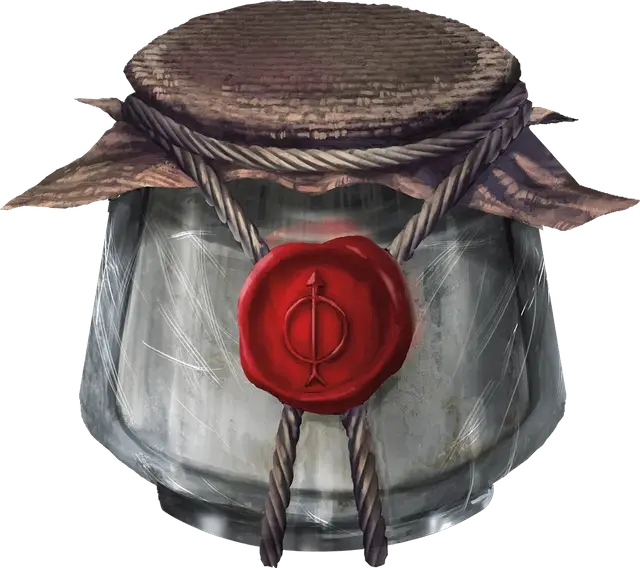

Мазь Кеогтома
Keoghtom’s Ointment
Чудесный предмет, необычный

Рекомендованная стоимость 400 зм
Эта стеклянная банка диаметром 3 дюйма содержит 1к4 + 1 дозу густой смеси, слабо пахнущей алоэ. Банка и её содержимое весят ½ фунта (~220г).
Действием Использование вы можете проглотить одну дозу мази или нанести её на существо в пределах 5 футов от вас. Существо, на которое действует эта мазь, восстанавливает 2к8 + 2 Хитов и теряет состояние Отравленный.